Private preparation gallery. Before and new evidence remain distinct. Synthetic fixtures are marked in README; no real camera/inference proof.
regular · before
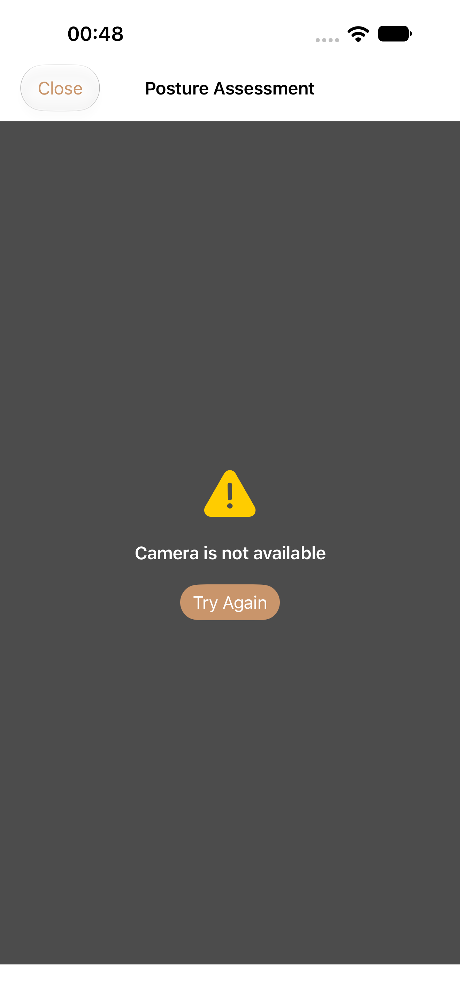
Historical capture index source: 443a32ca4fe8b79d644b36853eaa7662e7a57606 · original entry
regular · screen-0-1320x2868-P01 preparing after retry without camera inference_0_3341EE74-3907-4DC8-9C51-83FA93B2284B.png
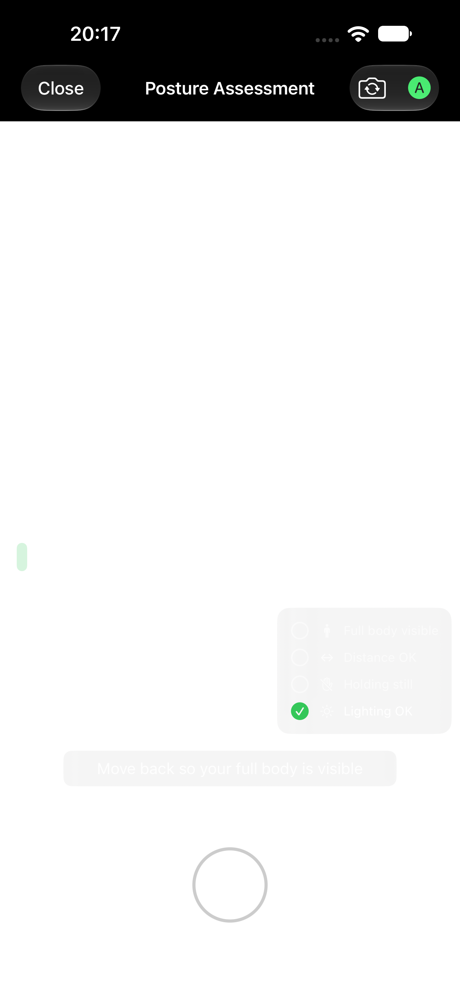
Source 23fa2883 · PostureVisualAuditTests/testP01CaptureFallbackRetryAndClose() · 1320×2868 px · AX hierarchy
regular · screen-0-1320x2868-P01 camera unavailable with retry and Close_0_6EF51624-D16E-470D-A7D2-7EB4B347F61D.png
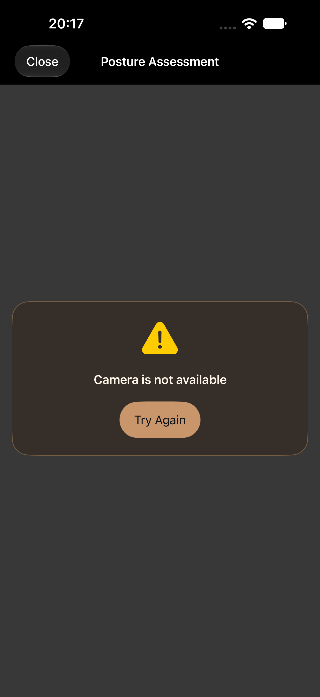
Source 23fa2883 · PostureVisualAuditTests/testP01CaptureFallbackRetryAndClose() · 1320×2868 px · AX hierarchy
ipad · before
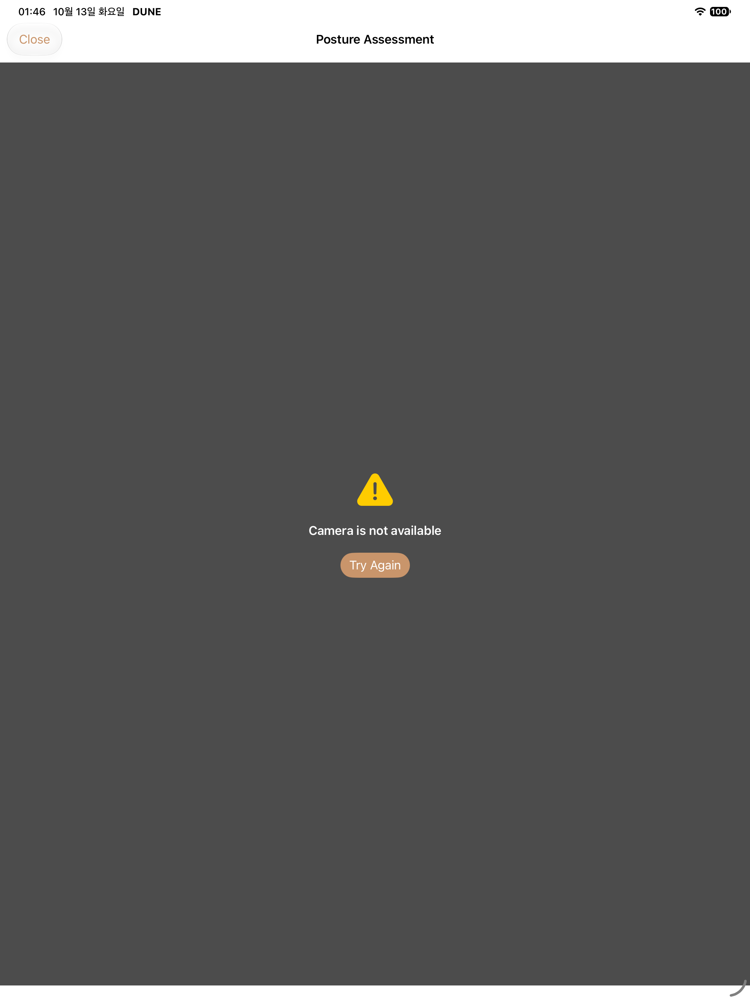
Historical capture index source: 443a32ca4fe8b79d644b36853eaa7662e7a57606 · original entry
ipad · screen-0-1512x2316-P01 preparing after retry without camera inference_0_EEC7A0FA-FE7D-4FA5-A152-C1C9E616200B.png
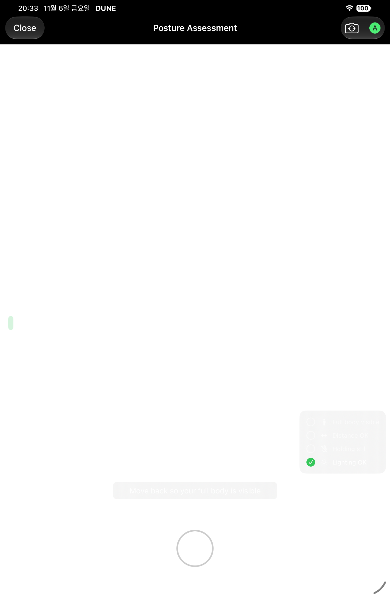
Source 6fe1f089 · PostureVisualAuditTests/testP01CaptureFallbackRetryAndClose() · 1512×2316 px · AX hierarchy
ipad · screen-0-1512x2316-P01 camera unavailable with retry and Close_0_57337553-36A3-4BFB-9728-0CBC0A96CB66.png
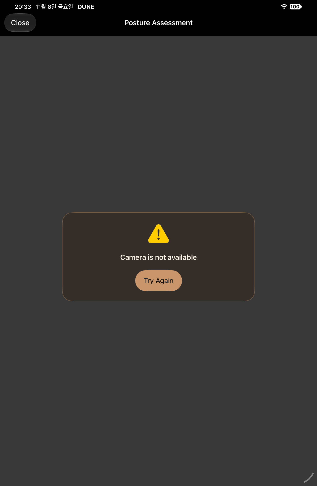
Source 6fe1f089 · PostureVisualAuditTests/testP01CaptureFallbackRetryAndClose() · 1512×2316 px · AX hierarchy
duo · before
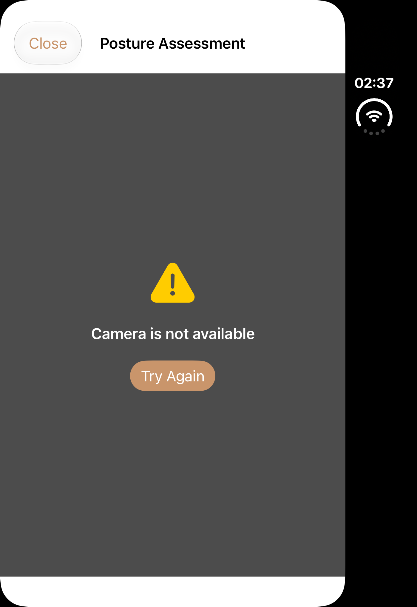
Historical capture index source: 443a32ca4fe8b79d644b36853eaa7662e7a57606 · original entry
duo · P01 camera unavailable with retry and Close
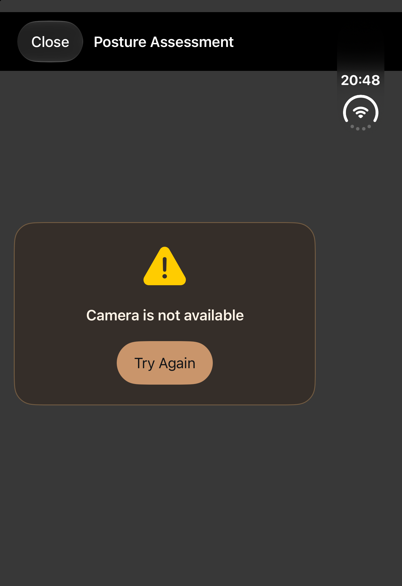
Source 6fe1f089 · PostureVisualAuditTests/testP01CaptureFallbackRetryAndClose() · 1398×2034 px · AX hierarchy
duo · P01 preparing after retry without camera inference
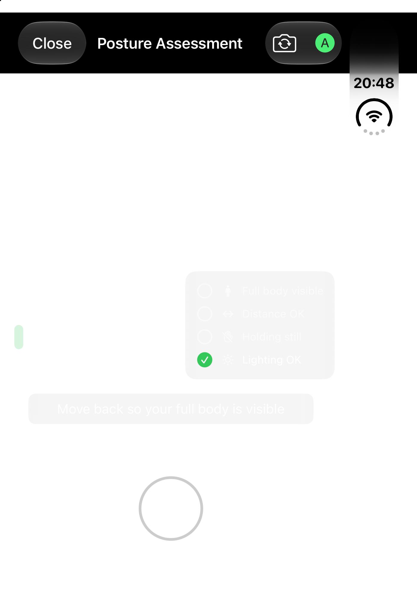
Source 6fe1f089 · PostureVisualAuditTests/testP01CaptureFallbackRetryAndClose() · 1398×2034 px · AX hierarchy
duo-open · before
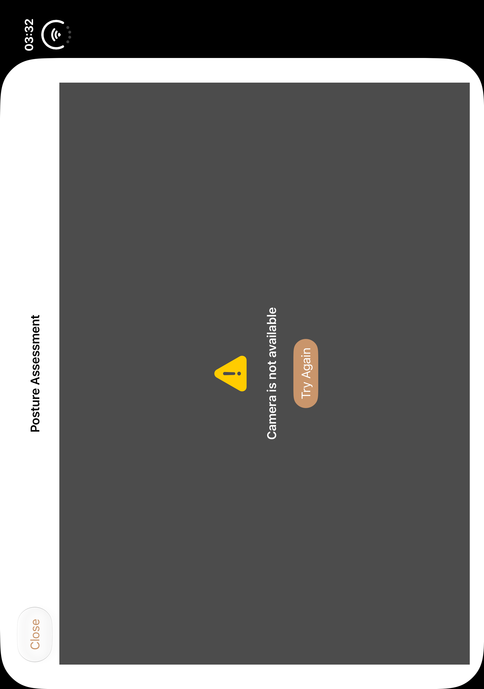
Historical capture index source: 443a32ca4fe8b79d644b36853eaa7662e7a57606 · original entry
duo-open · P01 camera unavailable with retry and Close
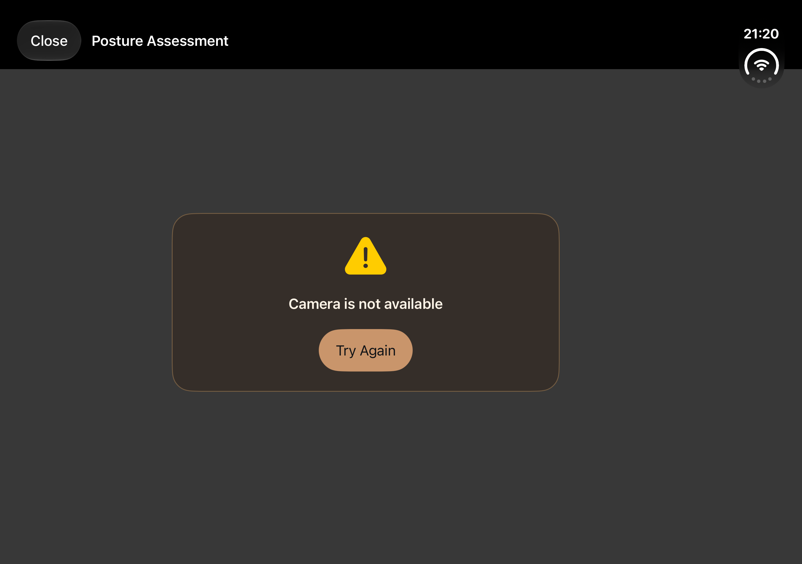
Source d6ac · PostureVisualAuditTests/testP01CaptureFallbackRetryAndClose() · 2853×2007 px · AX hierarchy
duo-open · P01 preparing after retry without camera inference
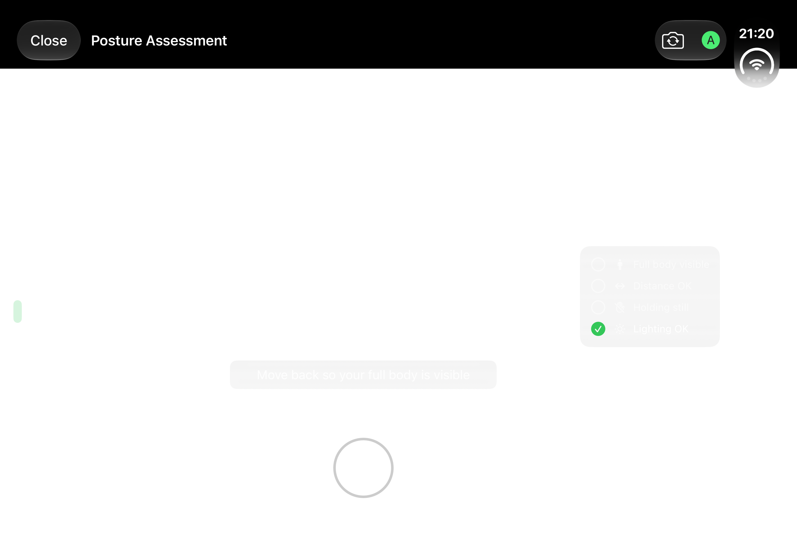
Source d6ac · PostureVisualAuditTests/testP01CaptureFallbackRetryAndClose() · 2853×2007 px · AX hierarchy